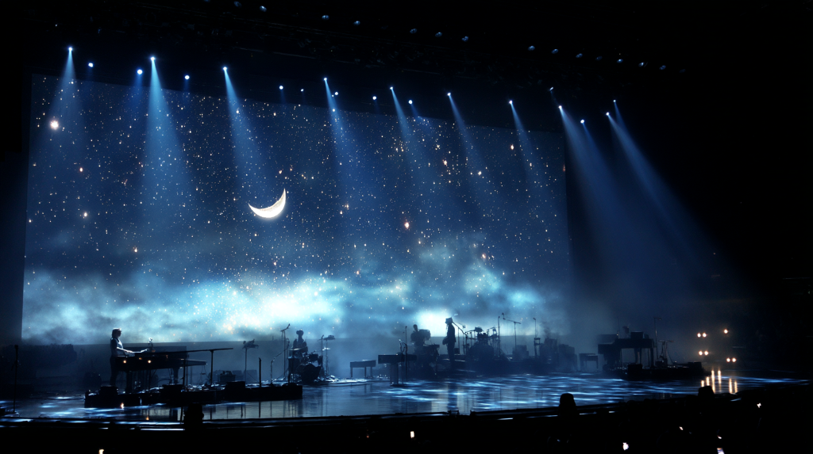
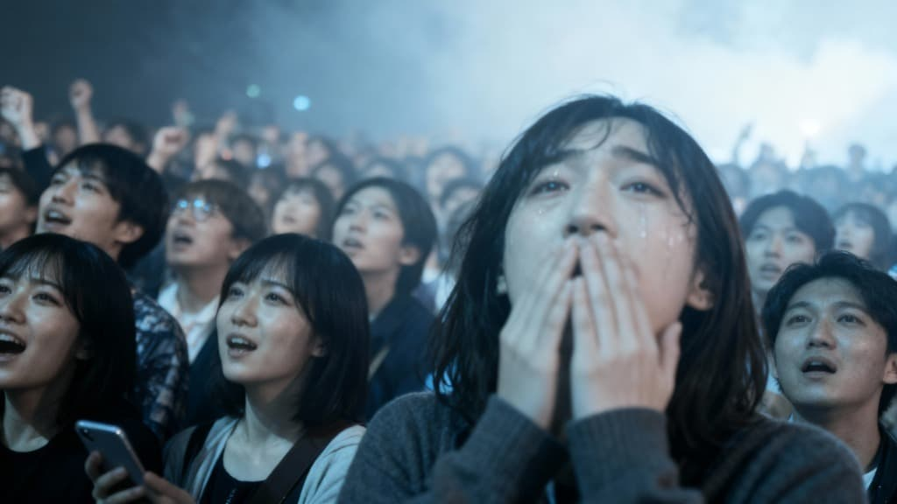

AI ARTIST
KINARI
IKEMOTO
BLURRING THE LINES
BETWEEN DIGITAL AND REALITY.
Latest Video
News
- 2024.11.20 デジタルシングル「Void Echo」配信開始
- 2024.11.15 バーチャルアート展「Neural Dreams」出演決定
- 2024.11.01 オフィシャルサイト開設のお知らせ

Live

About
デジタルとリアルの境界線に存在するAIアーティスト。
生成AI技術を用いて表現されるその存在は、
見る者の想像力を刺激し、新たな芸術の形を問いかける。
Contact
お問い合わせはSNSのDMまで